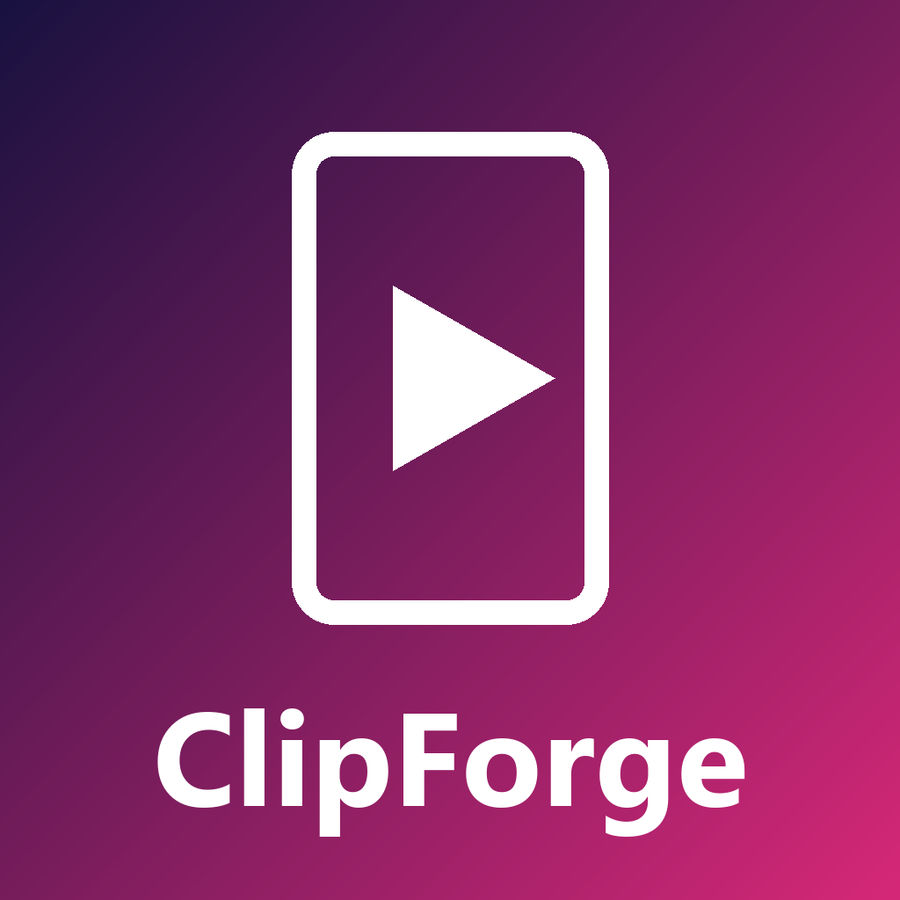

ClipForgeTerms of Service
Last updated: 14 November 2026
1. About ClipForge
ClipForge is a personal software tool that turns long Twitch streams into short vertical clips and posts clips its owner has approved to the owner's own social media accounts, including TikTok and YouTube. It is developed and operated by an individual developer (GitHub: mattiasfe). It is not offered as a public service.
2. Who may use it
ClipForge runs on its owner's own computer. Only the owner can use it, and only with accounts the owner controls. There is no registration, no paid plan and no access for other people.
3. Connected accounts
When you connect a TikTok or YouTube account, you authorise ClipForge to act on that account within the permissions you approved on the platform's consent screen. You can withdraw that authorisation at any time in the platform's own account settings. You remain responsible for your accounts and must follow each platform's terms, including the TikTok Terms of Service and Community Guidelines.
4. Content
You are responsible for the clips you post with ClipForge. Only post content you have the right to use, such as streams whose creators allow clipping or campaigns you have joined. Sponsored or paid content must be disclosed as required by the platform and by law.
5. No warranty
ClipForge is provided "as is", without warranty of any kind. The developer is not liable for lost content, failed posts, account restrictions or other damages arising from its use, to the extent permitted by law.
6. Changes
These terms may change. The date at the top shows when they were last updated.
7. Law
These terms are governed by Norwegian law.
8. Contact
Questions about these terms can be sent as an issue on GitHub.